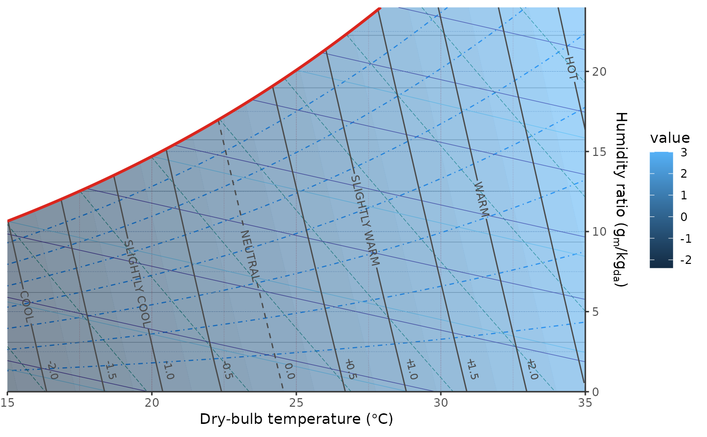
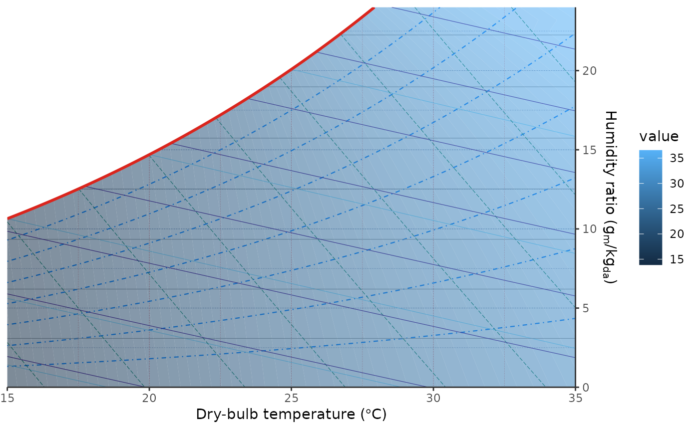
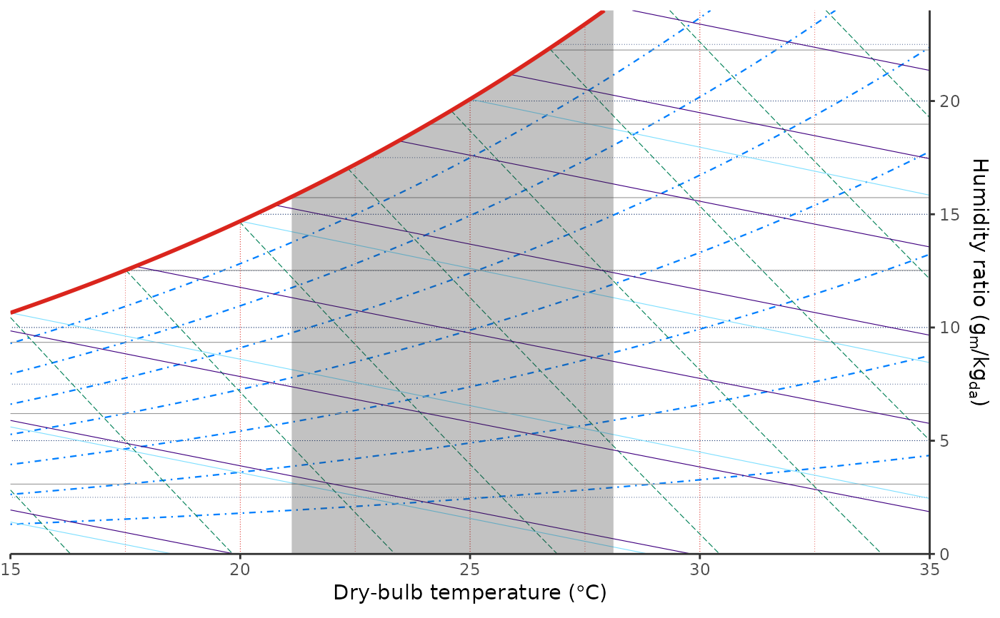
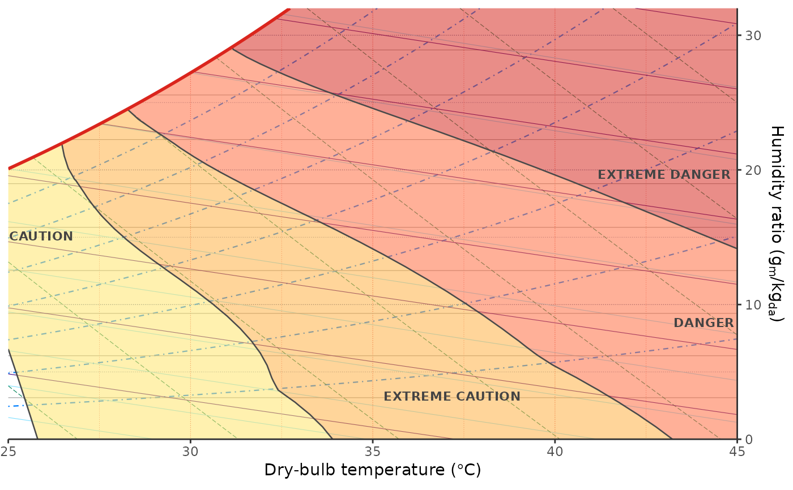

Model objects capture the fixed inputs used by comfort layers. They can be reused across overlays, contours, zones, and point states.
Usage
comfort_model_pmv(
tr = NULL,
vr = 0.1,
met = 1.2,
clo = 0.5,
wme = 0,
model = "7730-2005",
limit_inputs = FALSE,
round_output = FALSE
)
comfort_model_set(
tr = NULL,
v = 0.1,
met = 1.2,
clo = 0.5,
wme = 0,
limit_inputs = FALSE,
body_surface_area = 1.8258,
p_atm = NULL,
position = c("standing", "sitting"),
round_output = FALSE
)
comfort_model_adaptive(
t_running,
tr = NULL,
v = 0.1,
standard = c("ashrae55", "en16798"),
category = NULL,
limit_inputs = TRUE,
round_output = FALSE
)
comfort_model_heat_index(
solar_exposure = 0,
limit_inputs = TRUE,
round_output = FALSE
)Arguments
- tr
Mean radiant temperature. Defaults to
tdb.- vr
Relative air speed for PMV.
- met
Metabolic rate in met.
- clo
Clothing insulation in clo.
- wme
External work in met.
- model
PMV model/version label. Currently
"7730-2005"is implemented.- limit_inputs
If
TRUE, values outside the model applicability range are returned asNA.- round_output
If
TRUE, round model outputs. Comfort plot layers use unrounded values by default so contours and zones remain smooth.- v
Air speed for SET and adaptive comfort.
- body_surface_area
Body surface area in square meters for SET.
- p_atm
Atmospheric pressure in Pa.
- position
Body position,
"standing"or"sitting".- t_running
Running mean outdoor temperature.
- standard
Adaptive comfort standard.
- category
Adaptive comfort category.
- solar_exposure
Relative solar exposure for heat index, from 0 to 1.
Examples
# Create a PMV model object.
comfort_model_pmv(met = 1.4, clo = 0.5)
#> $type
#> [1] "pmv"
#>
#> $params
#> $params$tr
#> NULL
#>
#> $params$vr
#> [1] 0.1
#>
#> $params$met
#> [1] 1.4
#>
#> $params$clo
#> [1] 0.5
#>
#> $params$wme
#> [1] 0
#>
#> $params$model
#> [1] "7730-2005"
#>
#> $params$limit_inputs
#> [1] FALSE
#>
#> $params$round_output
#> [1] FALSE
#>
#>
#> attr(,"class")
#> [1] "PsyComfortModel" "list"
# Create a SET model object.
comfort_model_set(v = 0.2)
#> $type
#> [1] "set"
#>
#> $params
#> $params$tr
#> NULL
#>
#> $params$v
#> [1] 0.2
#>
#> $params$met
#> [1] 1.2
#>
#> $params$clo
#> [1] 0.5
#>
#> $params$wme
#> [1] 0
#>
#> $params$limit_inputs
#> [1] FALSE
#>
#> $params$body_surface_area
#> [1] 1.8258
#>
#> $params$p_atm
#> NULL
#>
#> $params$position
#> [1] "standing"
#>
#> $params$round_output
#> [1] FALSE
#>
#>
#> attr(,"class")
#> [1] "PsyComfortModel" "list"
# Create an adaptive comfort model object.
comfort_model_adaptive(t_running = 22)
#> $type
#> [1] "adaptive"
#>
#> $params
#> $params$t_running
#> [1] 22
#>
#> $params$tr
#> NULL
#>
#> $params$v
#> [1] 0.1
#>
#> $params$standard
#> [1] "ashrae55"
#>
#> $params$category
#> NULL
#>
#> $params$limit_inputs
#> [1] TRUE
#>
#> $params$round_output
#> [1] FALSE
#>
#>
#> attr(,"class")
#> [1] "PsyComfortModel" "list"
# Create a heat-index model object.
comfort_model_heat_index(solar_exposure = 0.5)
#> $type
#> [1] "heat_index"
#>
#> $params
#> $params$solar_exposure
#> [1] 0.5
#>
#> $params$limit_inputs
#> [1] TRUE
#>
#> $params$round_output
#> [1] FALSE
#>
#>
#> attr(,"class")
#> [1] "PsyComfortModel" "list"
# Draw a PMV overlay using custom activity and clothing assumptions.
ggpsychro(tdb_lim = c(15, 35), hum_lim = c(0, 24)) +
geom_comfort_overlay(
model = comfort_model_pmv(met = 1.4, clo = 0.5),
n = c(45, 30)
)

# Draw SET as the filled comfort metric.
ggpsychro(tdb_lim = c(15, 35), hum_lim = c(0, 24)) +
geom_comfort_overlay(
model = comfort_model_set(v = 0.2),
metric = "set",
n = c(45, 30)
)

# Draw the adaptive acceptability region.
ggpsychro(tdb_lim = c(15, 35), hum_lim = c(0, 24)) +
geom_comfort_zone(
model = comfort_model_adaptive(t_running = 22),
metric = "acceptability",
n = c(45, 30),
alpha = 0.3
)

# Draw heat-index categories with a solar exposure adjustment.
ggpsychro(tdb_lim = c(25, 45), hum_lim = c(0, 32)) +
geom_comfort_heat_index(
model = comfort_model_heat_index(solar_exposure = 0.5),
n = c(55, 35)
)
